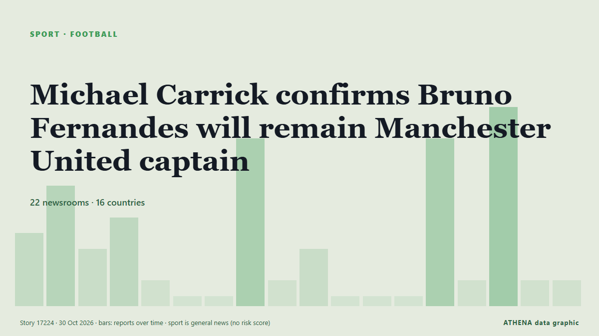

Michael Carrick confirms Bruno Fernandes will remain Manchester United captain

Manchester United captain Bruno Fernandes turned on head coach Michael Carrick after one of the club's most humiliating nights in European history. von MyJoyOnline
Unabhängig gemeldet von 22 Medien in 16 Ländern seit dem 21. Okt., zuerst von Stuff; die Berichterstattung flaut ab. Sport und Kultur werden ohne Risikobewertung abgelegt. Die Konfidenz liegt bei 92 % (hoch): 22 Medien bestätigen es unabhängig, bei einer mittleren Verlässlichkeit der Quellen von 73 %. Wer berichtete: 14 Medien in Vereinigtes Königreich · United Kingdom, 6 Medien in Nigeria, 3 Medien in Uganda. Die Berichterstattung lief von 21. Okt. bis 28. Okt., über 161 Stunden.
Was sich geändert hat: 13 neue Berichte von 12 Redaktionen in den 24 Stunden bis 30. Okt..
Erste Schlagzeile: Fernandes rounds on Carrick after Man Utd humiliation
Schlagzeilen werden auf Englisch angezeigt, wie veröffentlicht.
Auf einen Blick
Ausgewählt, bewertet und geschrieben nach der veröffentlichten Methodik von ATHENA. Kein Redakteur greift in einzelne Ereignisse ein. So entsteht ATHENA ›
| 21 Oct 19:19 UTC | 4 |
|---|---|
| 22 Oct 07:19 UTC | 7 |
| 22 Oct 19:19 UTC | 3 |
| 23 Oct 07:19 UTC | 5 |
| 23 Oct 19:19 UTC | 1 |
| 24 Oct 07:19 UTC | 0 |
| 24 Oct 19:19 UTC | 0 |
| 25 Oct 07:19 UTC | 10 |
| 25 Oct 19:19 UTC | 1 |
| 26 Oct 07:19 UTC | 3 |
| 26 Oct 19:19 UTC | 0 |
| 27 Oct 07:19 UTC | 0 |
| 27 Oct 19:19 UTC | 0 |
| 28 Oct 07:19 UTC | 10 |
| 28 Oct 19:19 UTC | 1 |
| 29 Oct 07:19 UTC | 12 |
| 29 Oct 19:19 UTC | 1 |
| 30 Oct 07:19 UTC | 1 |
Warum diese Zahlen
Bedeutung
Risiko
Konfidenz
Die Berichterstattung – wer berichtete, und wann
Schlagzeile wie veröffentlicht · öffnet das Original- Stuff · Neuseeland · New ZealandWatch: Man Utd embarrassed by Champions League newcomers in stunning four-goal loss
- MyJoyOnline · GhanaFernandes rounds on Carrick after Man Utd humiliation
- The National · Vereinigte Arabische Emirate · United Arab EmiratesBruno Fernandes turns on Michael Carrick as Manchester United crisis deepens
- Vanguard · NigeriaFernandes takes aim at Carrick as Man Utd lurch into fresh crisis
- Nile Post · UgandaFernandes rounds on Carrick after Man Utd humiliation
- Asharq Al-Awsat (English) · Saudi-Arabien · Saudi ArabiaFernandes Takes Aim at Carrick as Man Utd Lurch into Fresh Crisis
- Punch · NigeriaUCL: Fernandes, Carrick clash over tactics after 4-1 loss to Como
- IOL · Südafrika · South AfricaFernandes delivers brutal verdict on Carrick’s tactical failure at Como
- Vanguard · NigeriaFernandes to remain Man Utd captain despite outburst
- CNA (Channel NewsAsia) · Singapur · SingaporeRooney labels Man United players 'selfish' after Fernandes criticism
- Arab News · Saudi-Arabien · Saudi ArabiaRooney labels Man United players ‘selfish’ after Fernandes criticism
- Taipei Times · TaiwanBruno Fernandes takes aim at Carrick
- Business Recorder · PakistanRooney labels Man United players 'selfish' after Fernandes criticism
- Asharq Al-Awsat (English) · Saudi-Arabien · Saudi ArabiaRooney Calls United Squad ‘Selfish Babies’ After Fernandes Criticism
- Cyprus Mail · Zypern · CyprusPolice investigate burglary at Man United captain Fernandes’ house
- Indian Express · Indien · IndiaBruno Fernandes’s home burgled when he was out playing Champions League in Italy
- Punch · NigeriaBruno Fernandes’ home burgled while in Italy for Como match
- Vanguard · NigeriaBruno Fernandes’ home burgled during Man Utd’s 4-1 defeat to Como
- Nile Post · UgandaCarrick refuses to rule out dropping Fernandes in emotional address 01:48
- MyJoyOnline · GhanaCarrick refuses to rule out dropping Fernandes in emotional address
- Cyprus Mail · Zypern · CyprusCarrick drops United captain Fernandes to bench against Bournemouth
- Evening Standard (London) · Vereinigtes Königreich · United KingdomMan Utd XI vs Bournemouth: Bruno Fernandes dropped - Starting lineup, confirmed team news, injury latest
- CNA (Channel NewsAsia) · Singapur · SingaporeFernandes pays price for criticism as Carrick drops United captain
- Jamaica Observer · Jamaika · JamaicaMan Utd’s Fernandes dropped by Carrick after Como outburst
- Evening Standard (London) · Vereinigtes Königreich · United KingdomMichael Carrick makes shock Bruno Fernandes claim after dropping Man Utd captain
- Vanguard · NigeriaEPL: Carrick benches Bruno Fernandes after Como outburst
- The Irish News (Belfast) · Vereinigtes Königreich · United KingdomBruno Fernandes dropped for Man Utd’s key clash with Bournemouth
- Evening Standard (London) · Vereinigtes Königreich · United Kingdom'Manchester United players will be relieved Bruno Fernandes has been dropped'
- Nile Post · UgandaFernandes left on bench for Man Utd defeat
- The Irish News (Belfast) · Vereinigtes Königreich · United KingdomMichael Carrick says dropping captain Bruno Fernandes ‘pure football’ decision
- Al Jazeera English · Katar · QatarCan Carrick survive Man United’s slump and Fernandes fallout?
- Manchester Evening News · Vereinigtes Königreich · United KingdomBruno Fernandes aims subtle dig at Manchester United on social media
- Manchester Evening News · Vereinigtes Königreich · United KingdomMichael Carrick told he 'cut his nose to spite his face' with Bruno Fernandes decision
- Manchester Evening News · Vereinigtes Königreich · United KingdomWhy Bruno Fernandes is at Carrington amid Manchester United crisis talks
- Manchester Evening News · Vereinigtes Königreich · United KingdomBruno Fernandes' 'unforgivable' Michael Carrick criticism means he's 'finished' at Man United
- Manchester Evening News · Vereinigtes Königreich · United KingdomMichael Carrick's crunch Man United meeting with Bruno Fernandes set for Chelsea return
- Belfast Telegraph · Vereinigtes Königreich · United KingdomBruno Fernandes told to ‘get away’ from Man Utd as Michael Carrick holds clear-the-air talks with Red Devils captain
- Evening Standard (London) · Vereinigtes Königreich · United KingdomBruno Fernandes set for Manchester United return after Michael Carrick holds clear-the-air talks
- The Irish News (Belfast) · Vereinigtes Königreich · United KingdomMichael Carrick and Bruno Fernandes hold clear-the-air talks before Chelsea trip
- Belfast Telegraph · Vereinigtes Königreich · United KingdomMichael Carrick and Bruno Fernandes hold clear-the-air talks before Chelsea trip